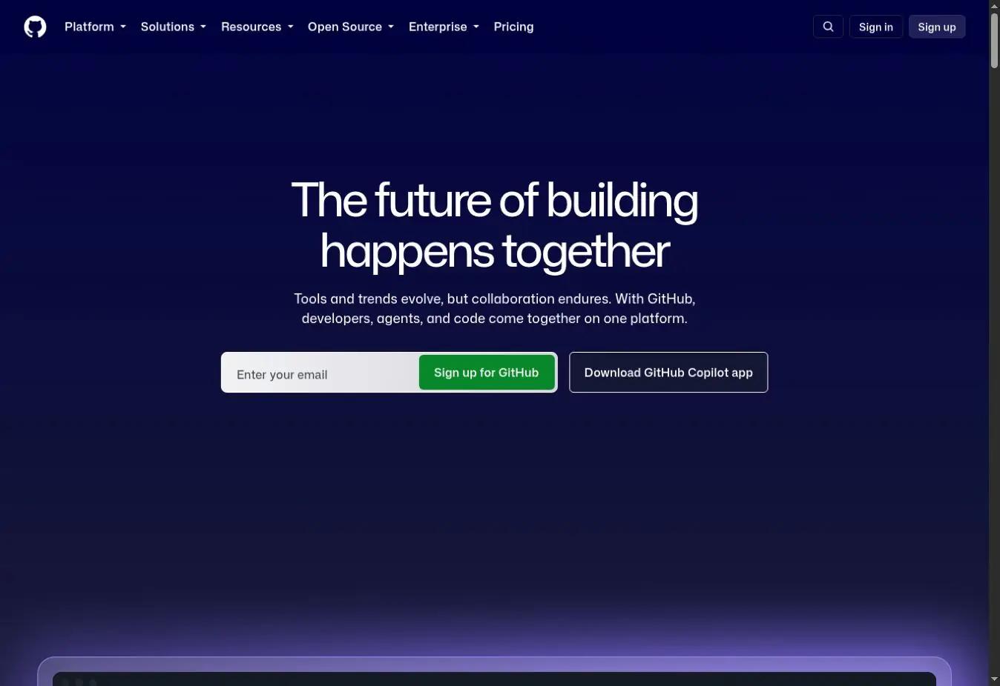
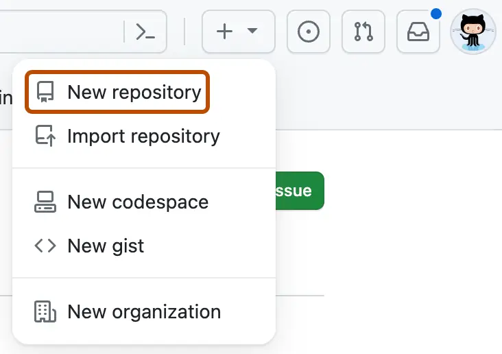
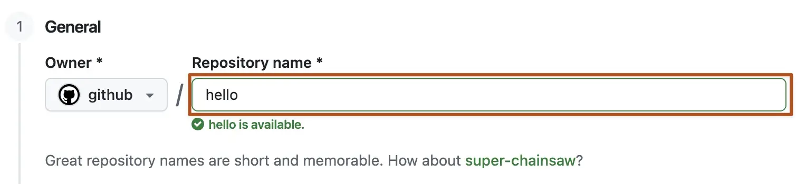
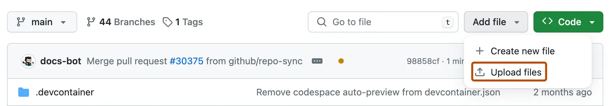

Appendix 2 — Part 2: Keeping Your First File Outside Your AI Account
This Part
Imagine you've created a useful instruction with AI for writing post-surgery care recommendations. You've tested it and revised it several times until the responses finally come out the way you want.
Now you want to keep that instruction, both for future use and for a day when you might no longer have access to this account.
In the previous part, we said to ask the AI to give you the final instruction as a Markdown file. Now we're going to put that file on GitHub so it also exists outside your AI account.
One important point before we start: the manual steps in this part are only to show you the process. Once you connect your AI tool to GitHub and grant the necessary access, you can have the agent create the file, put it in the repository, and record its changes. You don't need to do these steps by hand every time.
But we'll walk through them ourselves once. That way, when we say to an AI agent, “Put this file on GitHub,” we'll know where the file should go and how to check that it's really there.
A cabinet with separate folders
For now, think of GitHub as a cabinet for storing files. The cabinet is online, and you can open it from your phone or laptop.
Inside it, you can make a separate space for each project: one for your AI instructions, one for a paper you're writing, and one for your thesis, for example.
GitHub calls each of these project spaces a “repository,” or “repo” for short.
So when we say “create a repo,” all we mean for now is: make a designated place to keep this project's files.
A repo doesn't just store files. It also keeps a record of the changes you save to them. We'll talk more about that later.
First, let's sign in to GitHub
Open "github.com" in your browser.
If you don't have an account, select Sign up and follow the registration steps. If you already have an account, use Sign in.

Once you're signed in, use the plus-sign menu at the top of the page and select New repository. This means “create a new project space.”

What should we name this repo?
On the new page, you'll see a field labeled Repository name. Enter the repo's name there.
For our example, use:
my-prompts
That means “my prompts.” This is where we'll keep the instructions we've made for working with AI.

Should the files be public or private?
Under visibility, you have two choices: Public and Private.
Public means other people can see the repository's contents.
Private means the contents aren't visible to the general public. You and the people or tools you've granted access to can work with it according to their permissions.
Choose Private for this example. But remember: even a private repository is not a place for patient information, passwords, or access keys.
You'll also see an option called Add README. Turn it on.
A README is an introductory file where you can explain what the repository is for and what its files do—like an information sheet that comes with a case sent to the dental lab.
There's no need to write anything in it yet.
Now select Create repository.
Your repo page will open. You'll see its name at the top and a README in the file list.
The storage space is ready. We haven't put our instruction in it yet.
Put our first file into the repo
Go back to the conversation in which you created the instruction—for example, your instruction for writing post-surgery advice. Ask the AI:
“Give me the final version of the instruction for writing post-surgery recommendations, along with a brief explanation of how to use it, as a Markdown file I can download. Don't include the earlier conversation; keep only the final instruction and the necessary explanations.”
Markdown is a text file format, usually with a .md extension. You don't need to write it yourself; the AI can prepare the file.
Download it to your phone or laptop. Read through it and make sure it's the version you actually want to keep.
Return to your my-prompts repository page on GitHub. Above the file list, open Add file and choose Upload files. In other words: “I want to put a file from my device here.”

On the upload page, select choose your files and choose the file you downloaded. Wait for its name to appear on the page.
In the Commit changes area, you can write a short description, such as “Add post-surgery recommendation instruction.” Then use the commit button to finish adding the file. We'll explain exactly what a “commit” means later. For now, just know that selecting a file isn't enough: you also need to record the change.
After committing, the file should appear in the repository's file list. Select its name and read the text.
If you see the instruction you expected, this step is complete: a copy now exists on GitHub. You no longer need to search through the old chat messages to find it. You can open the repo and select the file.
Do we have to upload each file ourselves every time?
No. We only followed the manual steps to see where the file goes. After connecting a suitable AI tool to the repo, you can ask the agent to do exactly the same job.
You can even connect the agent right after creating the repo and let it put in the very first file.
Once you've connected it and granted the required permissions, the request can be as simple as:
“Create the final version of this instruction as a Markdown file and commit it to my my-prompts repository on GitHub. Give me the file link so I can open it and check it.”
If you created the instruction in a different conversation or tool, you'll need to give that text or file to the agent connected to GitHub. Don't assume it can see all your other conversations.
For future changes, you can also say:
“Read the post-surgery recommendation instruction file from my repo. Add this point to it, and commit the updated version to GitHub. Give me the link to the latest version.”
Your job is to decide what to keep, review the text, and make sure it was saved in the right place. The agent handles the execution.
In the next part, we'll connect AI to this same repository, step by step. After that, we'll make an independent copy on the laptop, because our files still shouldn't exist only inside one online account.